For Eduhacks 2017, we wanted to accelerate students' learning progress by building a data analytics dashboard.
I parsed data from .csv files into interactive Scalable Vector Graphics (SVG) charts using JavaScript
and the D3 library. I also engineered product design by designing UI and UX flow with mockups, user stories,
and relevant d3 charts.
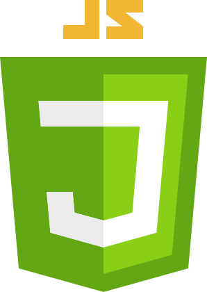
 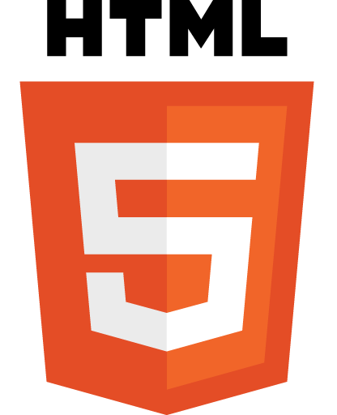
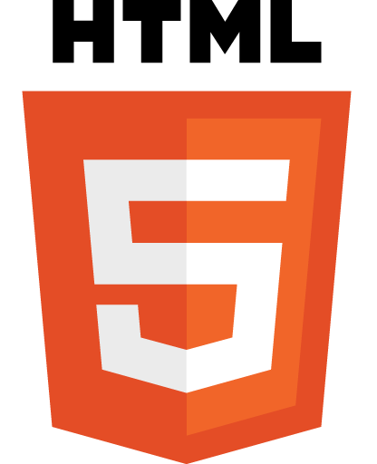

 View Code
View Code
1/3
Hello, I'm Quinn and I create.
I love creating software, design, and value
-- with as much passion and dedication as I can pour in.
2/3
I'm a full-time business and computer science (BUCS) student at UBC,
a part-time risk-taker in my side endeavours,
and a part-time explorer in off-peak study seasons.
3/3
Enough of me talking, it's your time to explore.
Feel free to click around!
×
Software Development Projects
Excelerate: Data Analytics for Learning (Eduhacks 2017)
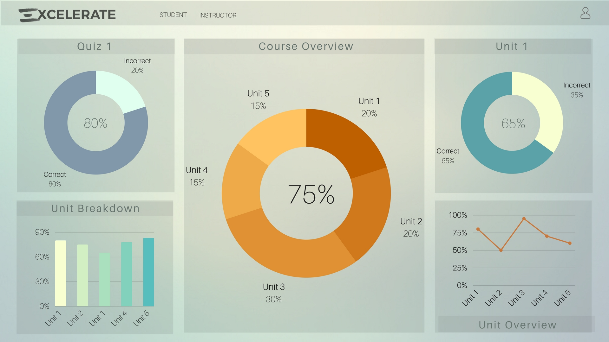
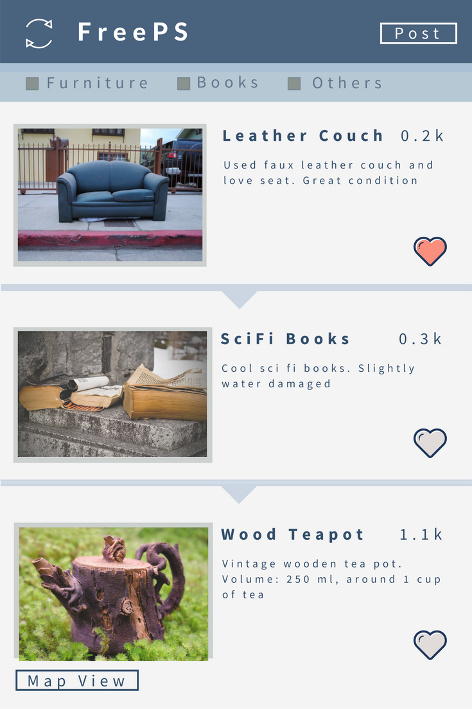
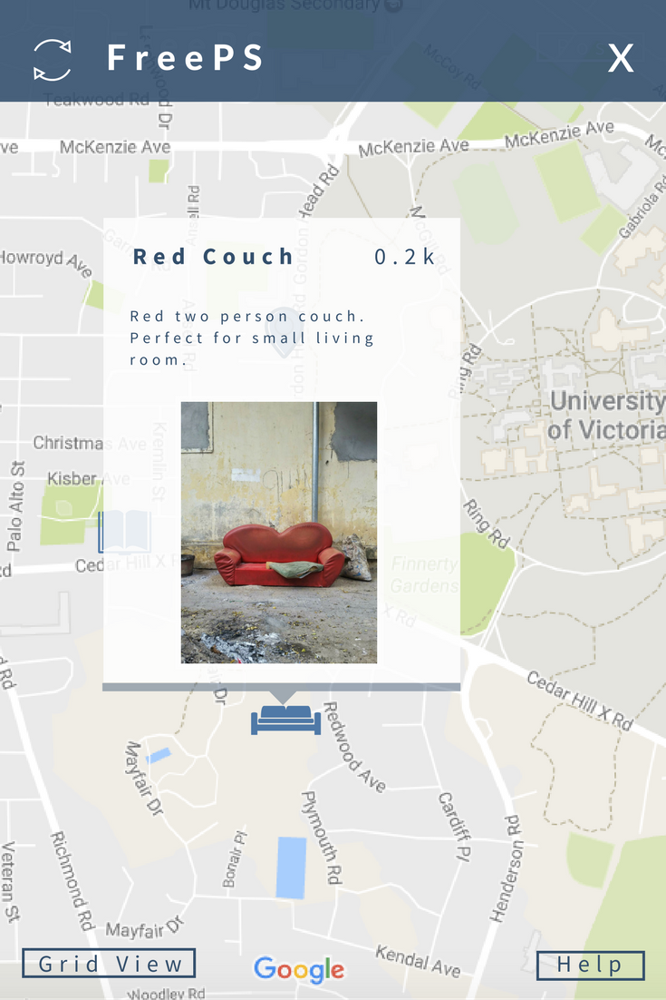
FreePS: Android App (HackUVic 2017)
Centraling hackUVic's theme of community improvements, FreePS is an android app that connects and accelerates the supply
and demand of freebies within a community, with two main features: finding the freebies and posting them.
I streamlined communication for product direction through designing application features, mockups, the
logo, and brand image. I also designed and implemented UI with Android Studio Layout Editor and XML.
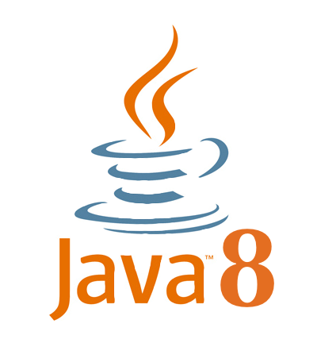
 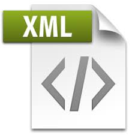
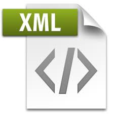
 View Code
View Code
Open Code: Web App (nwHacks 2017)
OpenCode provides a hub for beginner programmers to meet, collaborate, and get exposure to open source, while taking on
an active role in software development and expressing ideas.
I engineered front-end design by creating web app mockups, the logo, and icons with Adobe Illustrator
and Adobe Photoshop within the two hours to expedite back-end integration for teammates. I also implemented
a fully integrated UI with HTML and CSS by the 24 hour deadline.


 View Code
or live website
View Code
or live website
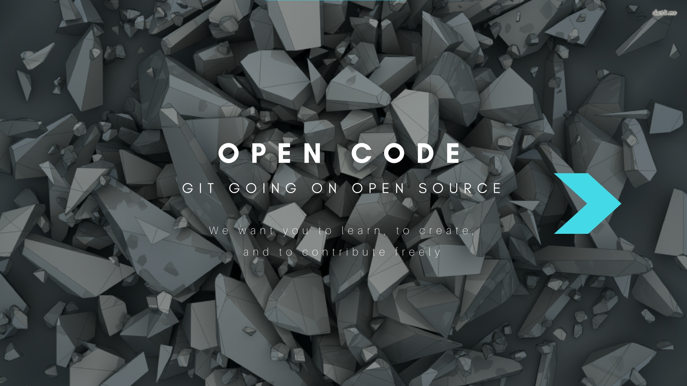
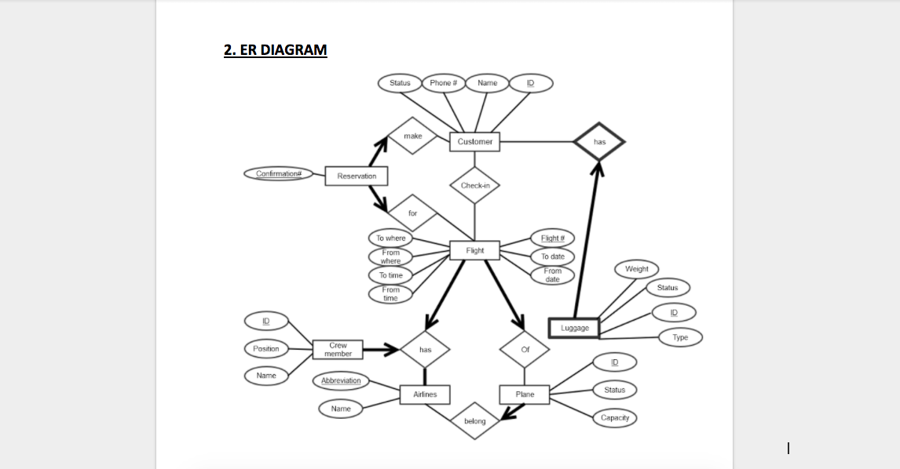
Fly Away SQL Database Application
Fly Away is a database application that monitors airport operations in Java and JDBC with MySQL Server, populated with a
mock airline database.
As preplanning, I developed relational schema to handle two classes of users (customers and airlines)
with 15 entities. For back-end, I displayed ResultSet Objects from SQL query statements on UI built from
IntelliJ Gui Designer in XML. Additionally, I implemented transactions in Java to parse SQL queries (including
triggers, nested queries, aggregations) in MySQL from user input.
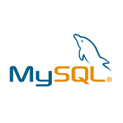

Out of My Mind (nwHacks 2016)
Out of My Mind is a peer-to-peer messaging web-based application for individuals coping with mental disorders, where chats
are facilitated by matching users based on current moods and feelings.
My first focus was improving data visualization by appending client-emitted chat message events with
Javascript. My second focus was improving user experience with HTML5 and CSS by colour coding chat messages
from different users.
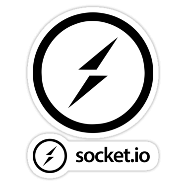


 View Code
or live website
View Code
or live website
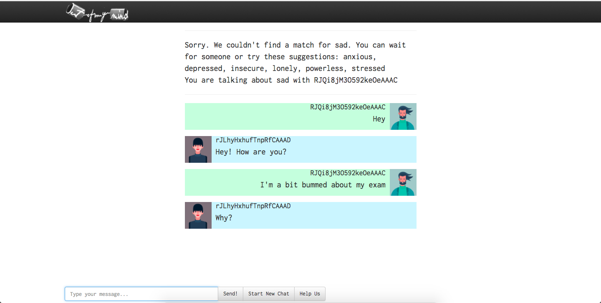
×


Initiatives and Creativity
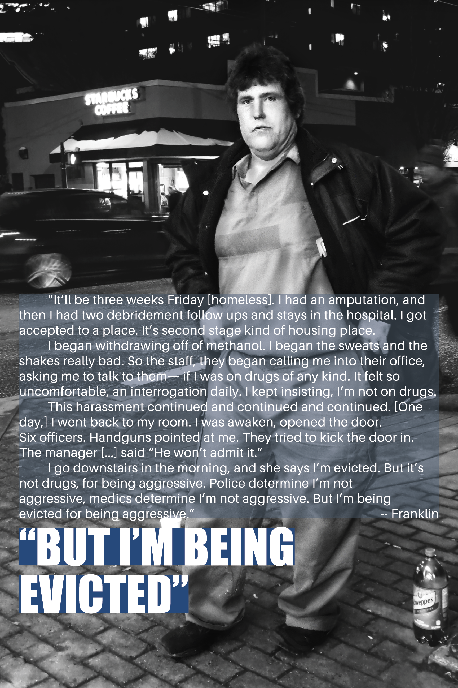
But Not Because: A Photography Exhibition
,But Not Because received UBC Connect to Community Grant 2017, as recognition for its efforts in improving social issues.
,But was a week-long photo exhibition held in March 2017 at UBC, as well as invited to present at the
Poverty Action Conference.
By featuring the conversations from the homeless community, its goal is to remove stigma and blame on
homelessness and to build a leveled understanding between communities.
This is just the start of change.
×
Exploring and Travelling
I'll be updating this section with my newest adventures soon.
In the meantime, you are welcome to visit my travel blog On Napkin Notes